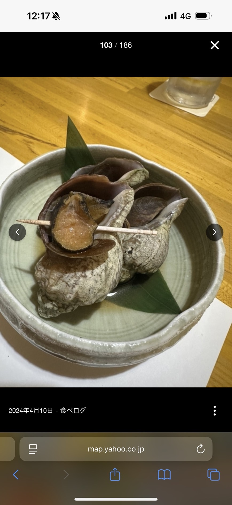
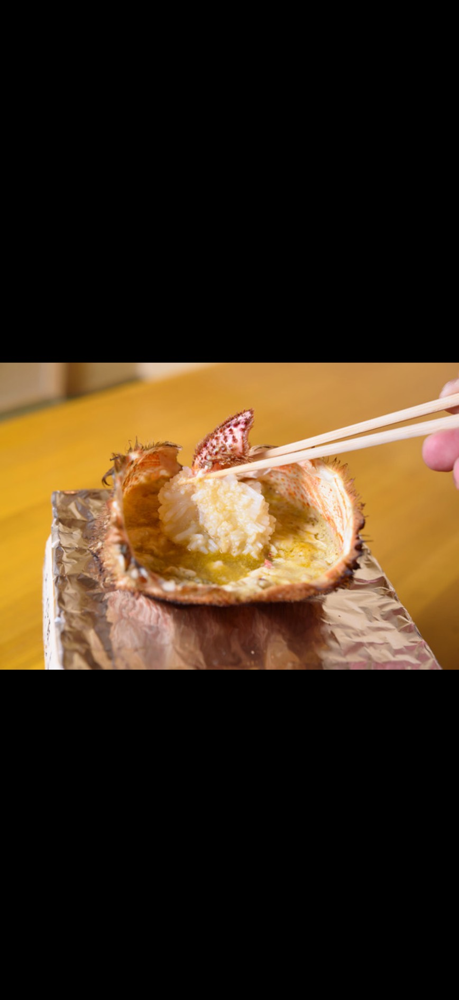
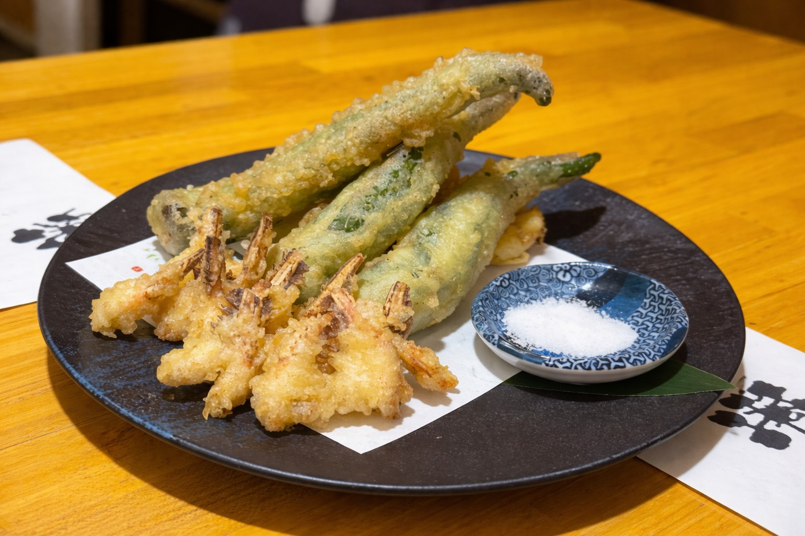

酒日和 縁屋
E N I S H I Y A
活 毛 カ ニ フ ル コ ー ス
¥16,500
お一人様（税込）｜＋¥2,750で飲み放題
※ 2名様より ／ 3日前までにご予約ください
コースの流れ（全11品）
一、先付け
二、毛蟹の茶碗蒸し
三、旬魚 お刺身3点盛り
四、活カニ刺身（2本）
五、カニ味噌しゃぶしゃぶ（2本）
六、カニ味噌共和え
七、甲羅酒
八、毛蟹醤油漬け
九、天ぷら
十、カニ雑炊
十一、水菓子
— FIRST COURSE —
先付け
Appetizer — "Sakizuke"

コースの始まりを告げる一品。季節により内容が変わります。
（一例：煮つぶ — 北海道産のつぶ貝をじっくり煮込んだもの）
（一例：煮つぶ — 北海道産のつぶ貝をじっくり煮込んだもの）
🐚 煮つぶの食べ方
- つぶ貝に楊枝が刺さっています
- 楊枝をくるくる回しながら身を引き出してください
- 煮汁にも旨みが凝縮されています — 一緒にお楽しみください
— SECOND COURSE —
毛蟹の茶碗蒸し
Horsehair Crab Chawanmushi — Savory Egg Custard

毛蟹の殻から丁寧にとったお出汁で作る茶碗蒸し。
卵は北海道・栗山町の「とうきび卵」を使用。中にはお野菜とカニの身が入っています。
卵は北海道・栗山町の「とうきび卵」を使用。中にはお野菜とカニの身が入っています。
🥄 食べ方
- 熱いのでお気をつけください
- スプーンでお召し上がりください
- 中のお野菜とカニの身も一緒にどうぞ
— THIRD COURSE —
旬魚 お刺身3点盛り
Seasonal Sashimi Trio

北海道の海から届くその日一番の鮮魚を3種盛り合わせ。
内容は日によって変わります。（一例：本鮪、ヒラメ、ニシンなど）
内容は日によって変わります。（一例：本鮪、ヒラメ、ニシンなど）
— FOURTH COURSE —
活カニ刺身（2本）
Live Crab Sashimi — 2 Legs per Person

活きた毛蟹をその場で捌いたお刺身。お一人様2本です。
蟹酢は自家製の煎り酒とポン酢で割った特製ブレンドです。
蟹酢は自家製の煎り酒とポン酢で割った特製ブレンドです。
🦀 食べ方 — 2本それぞれの楽しみ方
- 1本目：そのまま蟹酢につけてお召し上がりください
- 2本目：蟹酢の中にすだちを搾ってからお召し上がりください
— FIFTH COURSE —
カニ味噌しゃぶしゃぶ（2本）
Crab Miso Shabu-Shabu — 2 Legs per Person

飛騨コンロの上で温められた毛蟹の味噌と蟹脚2本が届きます。
蟹脚を蟹味噌の中でしゃぶしゃぶして楽しみます。
蟹脚を蟹味噌の中でしゃぶしゃぶして楽しみます。
🦀 食べ方 — とても大事！
- 蟹味噌はもう温まった状態で届きます
- 蟹脚2本を味噌の中に入れます
- 20〜30秒ほどしっかりと味噌を絡めてお召し上がりください
- 蟹味噌はこの後の「共和え」と「甲羅酒」にも使いますので、
全部は使い切らないでください
— SIXTH COURSE —
カニ味噌共和え
Crab Meat Mixed with Crab Miso — "Tomo-ae"

大将が丁寧にほぐした毛蟹の身が届きます。
しゃぶしゃぶで残った蟹味噌を合わせて「共和え」にします。
しゃぶしゃぶで残った蟹味噌を合わせて「共和え」にします。
🦀 食べ方
- 毛蟹のほぐし身のお皿が届きます
- 残った蟹味噌をすべてほぐし身の上にかけてください
- よく混ぜて「共和え」としてお召し上がりください
— SEVENTH COURSE —
甲羅酒
Shell Sake — "Koura-zake"

蟹味噌を使い切った甲羅に、熱燗を注いで作る「甲羅酒」。
甲羅に残った蟹味噌が溶け出し、世界に一つだけの贅沢な一杯になります。
甲羅に残った蟹味噌が溶け出し、世界に一つだけの贅沢な一杯になります。
🍶 楽しみ方
- 共和えの前に、蟹味噌はしっかりと全てお召し上がりください
- 甲羅の中の味噌がなくなったら、スタッフが熱燗を注ぎます
- 甲羅に残った蟹味噌を溶かしながらお飲みください
- 蟹の旨みが凝縮された、通だけが知る至福の一杯です
— EIGHTH COURSE —
毛蟹醤油漬け
Soy-Marinated Horsehair Crab — "Kegani Shoyu-zuke"

毛蟹の身を、自家製の醤油だれに漬け込んだもの。
生のお刺身とはまた違う、味が染み込んだ深い味わいをお楽しみください。
生のお刺身とはまた違う、味が染み込んだ深い味わいをお楽しみください。
🦀 食べ方
- すだちを搾ってカニにかけてください
- わさびを添えてお召し上がりください
- すでに味が入っているので、醤油は不要です
— NINTH COURSE —
天ぷら
Crab & Seasonal Vegetable Tempura

毛蟹の天ぷらと、旬の山菜の天ぷらの盛り合わせです。
🦀 食べ方
- 毛蟹の天ぷら：爪の先は硬いので食べられません
- 白い身の部分だけお召し上がりください
- お塩でも天つゆでも、お好みでどうぞ
— TENTH COURSE —
カニ雑炊
Crab Rice Porridge — "Zosui"

毛蟹の殻から丁寧にとったお出汁に、干し貝柱・桜エビを加えた贅沢な雑炊。
卵は茶碗蒸しでも使用した、栗山町のとうきび卵を使っています。
卵は茶碗蒸しでも使用した、栗山町のとうきび卵を使っています。
🥄 食べ方
- スプーンでお召し上がりください
- 蟹の旨みをすべて吸い込んだ〆の一品です
- 最後の一滴まで残さずどうぞ
— DESSERT —
水菓子
Seasonal Dessert — "Mizugashi"

コースの最後を飾る季節の甘味。
内容は季節により変わります。
内容は季節により変わります。
アレルギー情報
🦀甲殻類
🐟魚介
🥚卵
🫘大豆
🌾小麦
🦐エビ
「アレルギーがあります」
"I have an allergy"
酒日和 縁屋 — 札幌市中央区南6条西3丁目 アクミツビル2F — TEL 011-511-7667